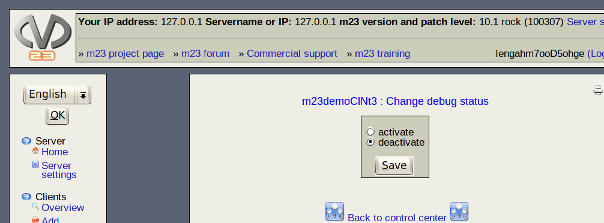

Next:
Client direct connection
Up:
Manage your clients
Previous:
Gimmicks
Contents
Change debug status
Clients with activated debug mode don't show user status information on the screen, but the output of the running scripts and executed tools.

This makes it easier for you to find errors of the script execution.
root 2015-09-06